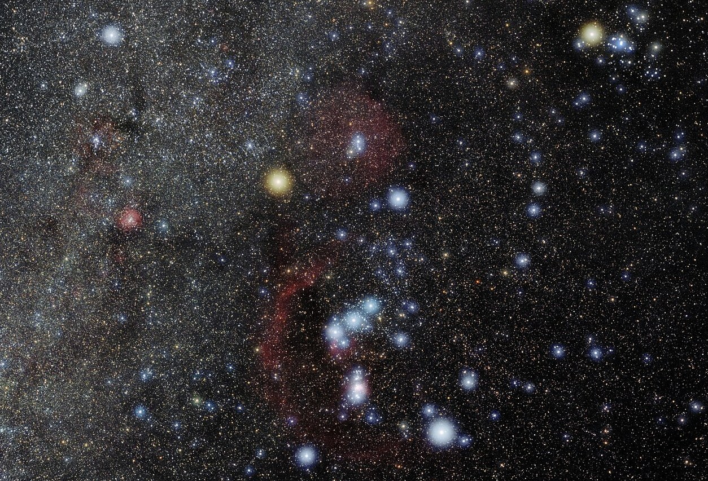

Найди созвездия
на своём фото
Загрузи снимок ночного неба. Атлас сопоставит звёзды с каталогом и нарисует линии созвездий поверх кадра.
JPG, PNG, WebP, HEIC/HEIF До 50 МБ
Отпусти фото, чтобы начать анализ
Анализ снимка
Пример снимка

Попробуй на готовом снимке
Как снять звёзды на телефон
Включи ночной режим и обопрись на что-нибудь устойчивое. Используй основную камеру на 1×. Оставь в кадре побольше неба, где видно несколько чётких звёзд. Яркие фонари, облака и смазанные звёзды мешают распознаванию.